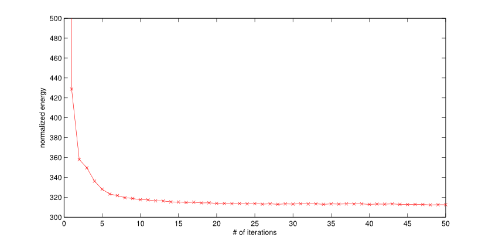

| about me | curriculum vitae | research | demos | courses |
demo 1 | demo 2
A Statistical Inverse Ray Tracing Approach to Multi-View StereoIntroduction | Datasets | Recent Results | Comprison with PMVS2 | ConvergenceThe change of Ray MRF's normalized energy as the number of iterations increases (Kermit dataset)
Rendered images of the reconstructed 3D model from 9 different views change over the iterations |
Last updated on Nov. 24, 2010